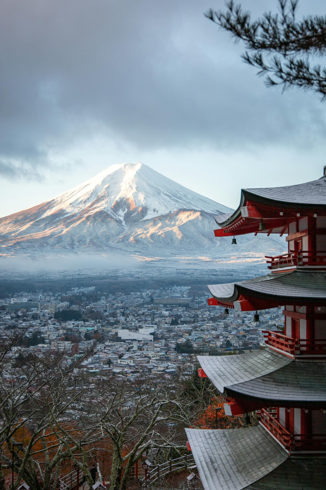
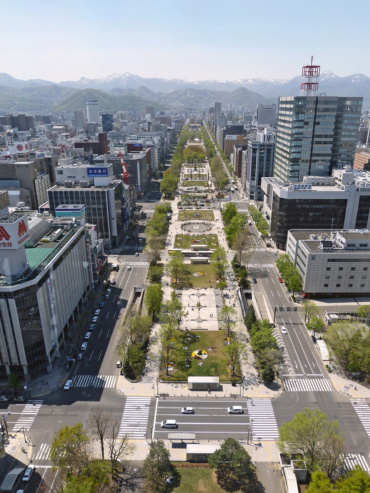
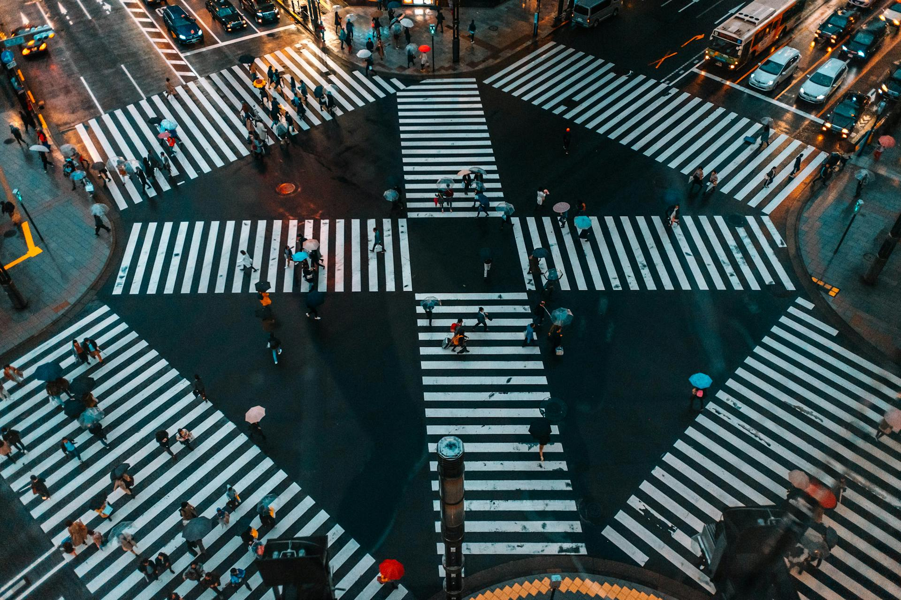
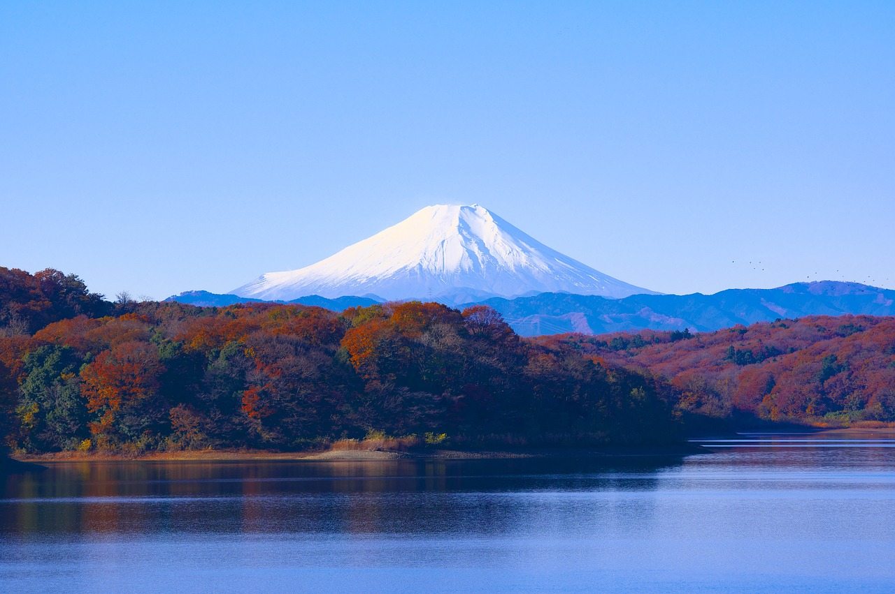
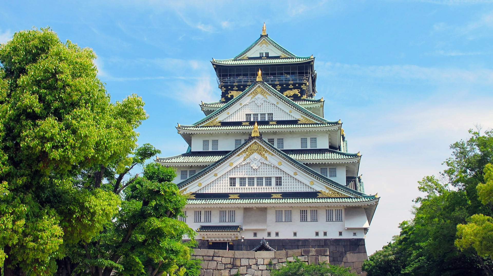
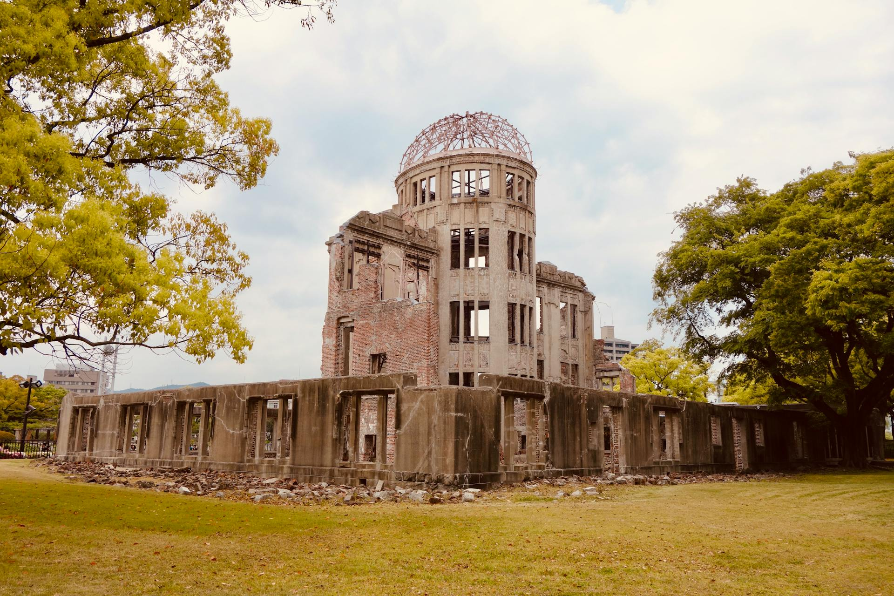
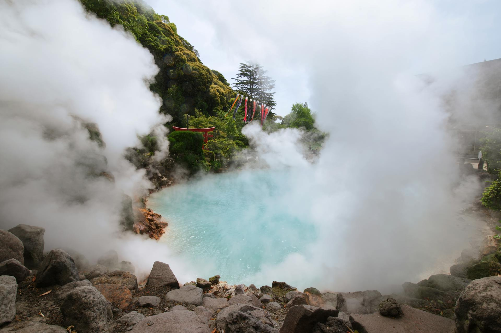
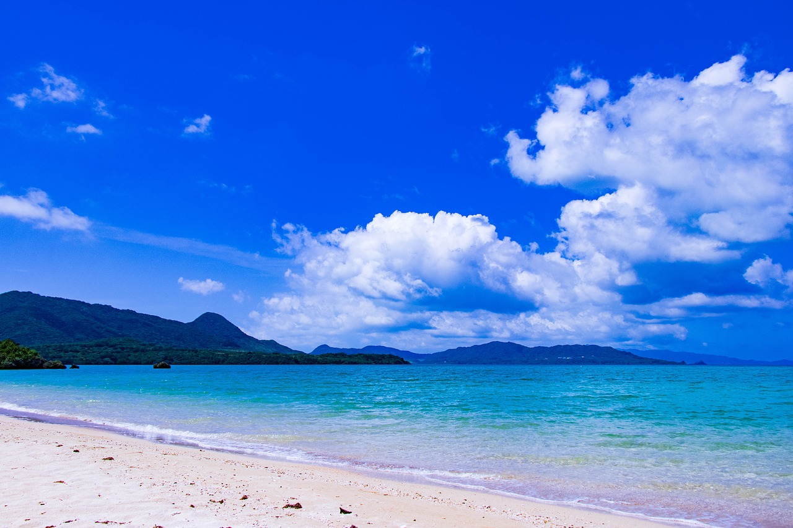
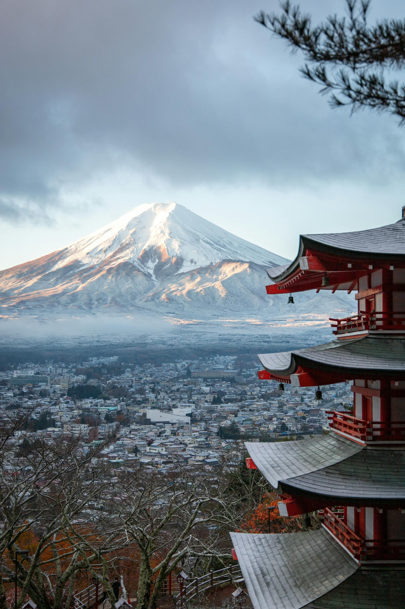

Wusstest du das? - Fuji
Der Fuji hat eine Höhe von etwa 3780m und ist somit der höchste Vulkan Japans. Richtig gehört es ist ein Vulkan. Das letztemal ist er 1707 in der Edo-Zeit ausgebrochen.
Hokkaido ist die nördlichste Region in Japan. Eine grosse Zahl an japanischen Milchprodukten stammt von hier. Diese Präfektur ist ausserdem für sein Schneefestival in Sapporo bekannt.
Hokkaido
Tohoku ist die nördlichste Region auf der Hauptinsel Honshu.
Aomori, Akita, Iwate, Yamagata, Miyagi und Fukushima
In Kanto liegt Japans Hauptstadt Tokyo. Hier leben rund 30 Millionen Menschen. Im Stadtteil Shibuya befindet sich der Shibuya Square. Es gibt hier ausserdem tolle Wanderwege und Kulturstädten.
Tochigi, Gunma, Ibaraki, Saitama, Chiba, Tokyo und Kanagawa
Der höchste Berg Japans, genauergesagt der Fuji liegt hier. In dieser Region fanden 1998 die Olympischen Winterspiele in Nagano statt. Im Süden, in Shizuoka wird Tee angebaut.
Niigata, Ishikawa, Toyama, Gifu, Nagano, Yamanashi, Shizuka, Aichi und Fukui
Hier befinden sich die Metropolen Osaka, Kyoto und Kobe. Die Einwohner von Kansai gelten als aufgeschossen und gesprächig.
Shiga, Kyoto, Osaka, Hyogo, Nara, Mie und Wakayama
Hier befindet sich die Stadt Hiroshima. Miyajima, liegt in der Bucht von Hiroshima und gehört zu den drei schönsten Naturlandschaften Japans.
Okayama, Hiroshima, Tottori, Shimane und Yamaguchi
Shikoku ist die viertgrösste Insel Japans. Die Region bietet viele heisse Quellen und viele Tempel.
Kagawa, Tokushima, Ehime und Kochi
Hier befinden sich einige der aktivsten Vulkane in Japan. Kyushu ist für ein Paradis für Surfer und Wassersportfans.
Fukuoka, Saga, Nagasaki, Oita, Kumamoto, Miyazaki, Kagoshima und Okinawa
Der Fuji hat eine Höhe von etwa 3780m und ist somit der höchste Vulkan Japans. Richtig gehört es ist ein Vulkan. Das letztemal ist er 1707 in der Edo-Zeit ausgebrochen.
